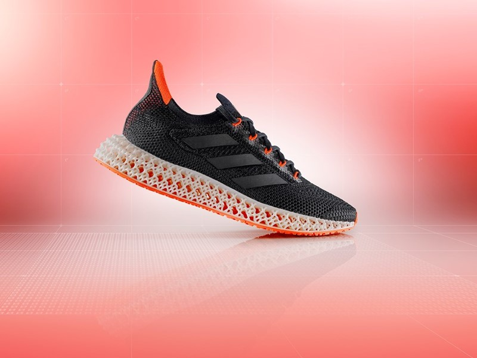

SHOES Shopping .
Home
Products
HYPE!
About

THE CLASSIC
The icon you know and love makes its way to the golf course to blend style with performance. It brings back mainstays like Max Air cushioning and molded elements. We updated the Waffle outsole to give you grip for the course, and a thin overlay helps keep water out. With purplish and orange hues spread throughout, this version has hints of the Grand Canyon state’s glowing spring skies. Valley of the Sun-Inspired This spring, the Valley of the Sun turns into an athletic paradise, an equinox of energy, eternal optimism and unbridled passion. It’s the haven away from home, a three-sport phoenix arising out of the snow and sleet, melting away the winter sludge and drudge. The colors of this design nod to Arizona's glowing skies in March and April, when the views are especially breathtaking. The melted Swoosh logo on the sides and a desert floor-like print reference the sun's heat and the energy it gives off during this wondrous time of year. Heritage Look A combination of fused overlays, additional eyestays and strategically placed mesh capture the look of the original Nike Air Max 90. The mesh has a thin, flexible overlay that helps keep out water and makes it easy to clean your shoes. Underfoot Comfort A foam midsole and Max Air unit in the heel cushions every step.